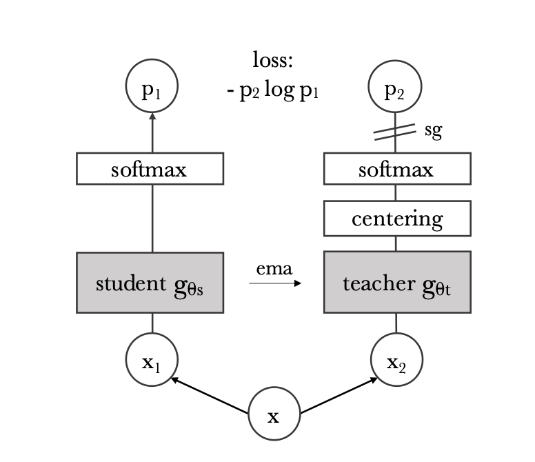

https://arxiv.org/abs/2104.14294
TL;DR
- DINO introduces a self-supervised method that doesn’t require labels or negative samples.
- It uses a teacher network and a student network, updating the teacher network’s parameters through EMA.
- The teacher network sees a global view, while the student network only sees local views. The student should output features similar to the teacher.
- To prevent all images from having similar features, centering and sharpening techniques are used.
Introduction
ViT requires significant computational resources and data. What are its benefits?
Motivation: Self-supervised learning has been successful in NLP. Is ViT’s lack of a clear advantage due to its reliance on supervised learning?
- GPT has clearer supervision signals than image models, because it is trained to predict the next token.
- Image training often reduces the rich visual information contained in an image to a single concept selected from a predefined set of a few thousand categories of objects
Key Components
- Momentum encoder: Provides more stable and gradual updates.
- Can be interpreted as a form of knowledge distillation without labels.
- Our method can work with only a centering and sharpening of the teacher output to avoid collapse.
Existing Self-Supervised Learning Methods for Images
- Instance Discrimination: Treats each image as a separate class (instance) and generates positive sample pairs through data augmentation (e.g., cropping, rotation). Images in positive set should have similar representations.
- A problem with this approach is that it does not scale well to large datasets because the number of categories grows linearly with the number of images.
- noise contrastive estimator
- BYOL: Similar in concept of this paper.
Approach
- Two networks: a teacher and a student. They have the same architecture but different parameters.
- Given an input image x, both networks output probability distributions over K dimensions, normalized using softmax with temperature τ.
- We use cross-entropy loss to make the student output similar to the teacher output.

sg means stop-gradient. Only student needs gradient.
Input Processing
- Input x is processed into a global view and several cropped local views of the image.
- The global view has a resolution of 224x224, covering a large area of the original image.
- Local views have a resolution of 96x96, covering only a small area of the original image.
- All crops are passed through the student, while only the global view is passed through the teacher.
Updating the Teacher Network
- Directly copying parameters from the student network in real-time does not lead to convergence.
- Freezing the teacher network for an epoch works well.
- We use an exponential moving average of the student network parameters: θteacher←λθteacher+(1−λ)θstudent, where λ follows a cosine schedule from 0.996 to 1 during training.
- The teacher model consistently provides more stable features.
Avoiding Collapse
- Collapse means that the features of all samples become almost identical.
- Centering: Subtracting an output mean from the teacher output. The mean is updated using EMA.
- EMA: a=λa+(1−λ)b
- Sharpening: Using a lower temperature to make certain dimensions more prominent after softmax.
- Centering encourages a uniform distribution, while sharpening makes the output more discriminative. They balance each other out.
Ablation Study
- EMA update for the teacher model is crucial.
- Cross-entropy loss performs better than MSE loss.
- Sinkhorn-Knopp improves results slightly.
- Multi-crop training is important.
- 8x8 patch size is better than 16x16 for ViT.
- The teacher model consistently outperforms the student model in validation for every epoch.
- This behavior has not been observed by other frameworks using momentum, nor when the teacher is built from the previous epoch of the student.
- We interpret the momentum teacher in DINO as a form of Polyak-Ruppert averaging.
- Polyak-Ruppert averaging aims to improve model performance and stability by averaging historical parameters.
- Multi-crop can save computational resources and improve performance.